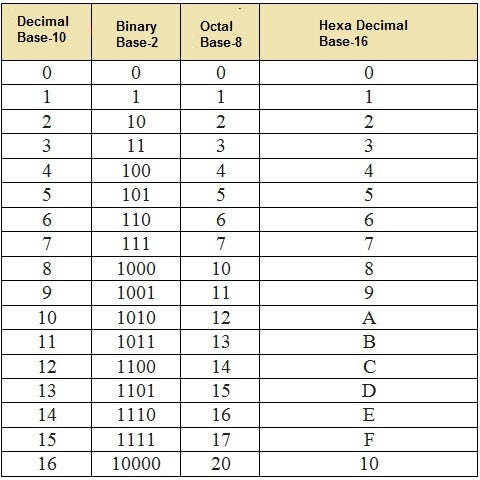

A number base converter is a tool or method used to transform numbers from one numerical base (or radix) to another, such as converting between decimal (base-10), binary (base-2), octal (base-8), and hexadecimal (base-16). This process is essential in fields like computer science, mathematics, and engineering, where different number systems are used for various purposes. Conversion methods typically involve dividing the number by the target base and recording remainders, or multiplying digits by powers of the base and summing the results. Understanding and performing these conversions is crucial for tasks such as data storage, digital circuit design, and mathematical problem-solving.
For more information -- GO TO ABOUT PAGE